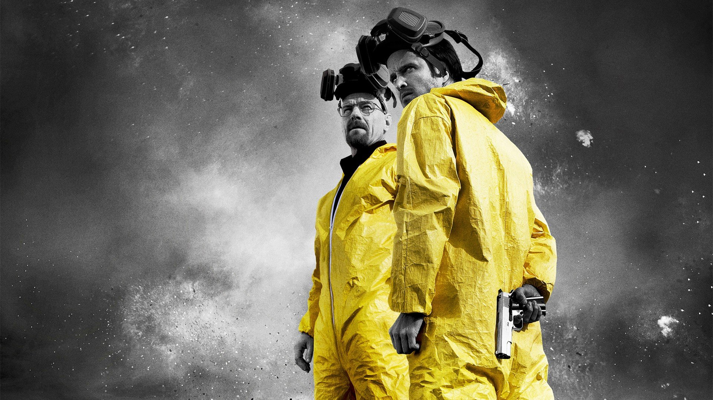

20 January 2021
Breaking Bad/h1> Tw Fb In
Even though this is a series, I couldn't resist to put it in my list. This is without a doubt the best series to ever air. Unmatchable acting performances from Bryan cranston and Aaron paul puts this show up the list. It shows one of the most entertaining plots that is very much realistic which allows the user to feel every moment. This series has a 0 predictability as it is very much different from the shows you see and it is, to say in short, amazingly made to the point of perfection. With a big replay value, This is an unmissable show you must atleast watch once in your life!
